Home · All Classes · Modules · QSS HELP · QSS 案例 · VER007 HOME
Qt 样式表 例子
样式表的使用
自定义 前景和背景颜色
让我们通过设置黄色是所有的背景颜色开始 QLineEdit 某个应用程序中。 这可以实现如下.
qApp->setStyleSheet("QLineEdit { background-color: yellow }");
如果我们希望属性只适用于QLineEdits中的一个特定的对话框的子项（或孙子或重孙子）
myDialog->setStyleSheet("QLineEdit { background-color: yellow }");
如果我们希望属性只适用于一个特定的QLineEdit, 我们可以给它使用名称 QObject::setObjectName() 并使用一个ID选择器来引用它：
myDialog->setStyleSheet("QLineEdit#nameEdit { background-color: yellow }");
或者，我们可以设置background-color 的直接财产QLineEdit, 省略了选择
nameEdit->setStyleSheet("background-color: yellow");
为了确保良好的对比，我们还应该指定一个合适的颜色的文本
nameEdit->setStyleSheet("color: blue; background-color: yellow");
这可能是更改用于选定的文本以及色彩的一个好主意：
nameEdit->setStyleSheet("color: blue;" "background-color: yellow;" "selection-color: yellow;" "selection-background-color: blue;");
使用自定义动态属性
还有，我们需要提出一个具有强制性的字段的表格很多情况下。 以指示该字段是强制性的，一次有效（虽然美观可疑）解决方案是使用黄色作为背景色为这些字段的用户。 事实证明，这是非常容易使用Qt样式表来实现。 首先，我们可以使用下面的应用程序范围内的样式表
*[mandatoryField="true"] { background-color: yellow }
这意味着，每个部件的mandatoryField Qt的属性设置为true，将有一个黄色的背景。
然后，对于每个必填字段部件，我们可以简单地创建一个mandatoryField动态属性，并将其设置为true。 例如：
QLineEdit *nameEdit = new QLineEdit(this); nameEdit->setProperty("mandatoryField", true); QLineEdit *emailEdit = new QLineEdit(this); emailEdit->setProperty("mandatoryField", true); QSpinBox *ageSpinBox = new QSpinBox(this); ageSpinBox->setProperty("mandatoryField", true);
自定义QPushButton使用盒模型
这一次，我们将展示如何创建一个红色QPushButton. 这QPushButton 大概会被连接到一个极具破坏性的一段代码。
首先，我们要使用这个样式表：
QPushButton#evilButton { background-color: red }
但是，结果是一个没有边界没有平整：
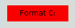
发生了什么事呢：
- 我们已经提出，不能单独使用本地样式来满足的请求（例如，Windows XP主题引擎不会让我们指定按钮的背景颜色）。
- 因此，按钮被使用样式表呈现。
- 我们没有指定任何值border-width and border-style, 所以默认情况下，我们得到的风格0像素宽的边框none 。
让我们通过指定边界改善情况：
QPushButton#evilButton { background-color: red; border-style: outset; border-width: 2px; border-color: beige; }
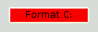
事情看起来已经好了很多。 但是，按钮看起来有点局促。 让我们来指定边框，并使用文字之间的间距一些 padding. 此外，我们将执行的最小宽度，圆形边角，并指定一个更大的字体，使按钮看起来更好：
QPushButton#evilButton { background-color: red; border-style: outset; border-width: 2px; border-radius: 10px; border-color: beige; font: bold 14px; min-width: 10em; padding: 6px; }
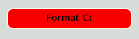
剩下唯一的问题是，当我们按下按钮没有反应。 我们可以通过指定一个稍微不同的背景色修复它并使用不同的边框样式。
QPushButton#evilButton { background-color: red; border-style: outset; border-width: 2px; border-radius: 10px; border-color: beige; font: bold 14px; min-width: 10em; padding: 6px; } QPushButton#evilButton:pressed { background-color: rgb(224, 0, 0); border-style: inset; }
自定义QPushButton的菜单指示器分控
子控件授予访问小窗口的子元素。 例如，一个 QPushButton 与菜单相关联(使用 QPushButton::setMenu()) 有一个菜单指示符。 让我们定制的红色按钮菜单指标:
QPushButton#evilButton::menu-indicator { image: url(myindicator.png); }
默认情况下，菜单指示器位于填充矩形的右下角。 我们可以通过指定改变这个 subcontrol-position 和 subcontrol-origin to以不同的锚定指标。 我们也可以用top and left由几个像素来移动指针。 例如：
QPushButton::menu-indicator { image: url(myindicator.png); subcontrol-position: right center; subcontrol-origin: padding; left: -2px; }
这种定位的myindicator.png到的中间偏右 QPushButton's padding 矩形 (见 subcontrol-origin 获取更多信息).
复杂的选择示例
由于红色似乎是我们最喜欢的颜色，让我们在文中 QLineEdit 通过设置以下应用程序范围的样式表红：
QLineEdit { color: red }
但是，我们想给的视觉指示一个 QLineEdit 是只读使其显示为灰色：
QLineEdit { color: red } QLineEdit[readOnly="true"] { color: gray }
在某些时候，我们的设计团队配备了所有的要求 QLineEdit 在登记表（使用 object name registrationDialog) 为棕色
QLineEdit { color: red } QLineEdit[readOnly="true"] { color: gray } #registrationDialog QLineEdit { color: brown }
一些UI设计的会议之后，我们决定，我们所有的 QDialog 应该具有棕色QLineEdit里:
QLineEdit { color: red } QLineEdit[readOnly="true"] { color: gray } QDialog QLineEdit { color: brown }
自定义特定的部件
本节提供了示例来使用自定义样式表的特定部件。
自定义 QAbstractScrollArea
任何背景 QAbstractScrollArea (项目的意见, QTextEdit and QTextBrowser) 可以使用背景属性进行设置。 例如，要设置一个背景图像，与滚动条滚动：
QTextEdit, QListView { background-color: white; background-image: url(draft.png); background-attachment: scroll; }
如果该背景图像是被固定的视区：
QTextEdit, QListView { background-color: white; background-image: url(draft.png); background-attachment: fixed; }
自定义 QCheckBox
一个定型 QCheckBox is almost indentical to styling a QRadioButton. 的主要区别在于，一个三态 QCheckBox 具有不确定状态。
QCheckBox { spacing: 5px; } QCheckBox::indicator { width: 13px; height: 13px; } QCheckBox::indicator:unchecked { image: url(:/images/checkbox_unchecked.png); } QCheckBox::indicator:unchecked:hover { image: url(:/images/checkbox_unchecked_hover.png); } QCheckBox::indicator:unchecked:pressed { image: url(:/images/checkbox_unchecked_pressed.png); } QCheckBox::indicator:checked { image: url(:/images/checkbox_checked.png); } QCheckBox::indicator:checked:hover { image: url(:/images/checkbox_checked_hover.png); } QCheckBox::indicator:checked:pressed { image: url(:/images/checkbox_checked_pressed.png); } QCheckBox::indicator:indeterminate:hover { image: url(:/images/checkbox_indeterminate_hover.png); } QCheckBox::indicator:indeterminate:pressed { image: url(:/images/checkbox_indeterminate_pressed.png); }
自定义 QComboBox
我们将看看那里下拉一个按钮一个例子 QComboBox 出现“合并”与组合框框架
QComboBox { border: 1px solid gray; border-radius: 3px; padding: 1px 18px 1px 3px; min-width: 6em; } QComboBox:editable { background: white; } QComboBox:!editable, QComboBox::drop-down:editable { background: qlineargradient(x1: 0, y1: 0, x2: 0, y2: 1, stop: 0 #E1E1E1, stop: 0.4 #DDDDDD, stop: 0.5 #D8D8D8, stop: 1.0 #D3D3D3); } /* QComboBox gets the "on" state when the popup is open */ QComboBox:!editable:on, QComboBox::drop-down:editable:on { background: qlineargradient(x1: 0, y1: 0, x2: 0, y2: 1, stop: 0 #D3D3D3, stop: 0.4 #D8D8D8, stop: 0.5 #DDDDDD, stop: 1.0 #E1E1E1); } QComboBox:on { /* shift the text when the popup opens */ padding-top: 3px; padding-left: 4px; } QComboBox::drop-down { subcontrol-origin: padding; subcontrol-position: top right; width: 15px; border-left-width: 1px; border-left-color: darkgray; border-left-style: solid; /* just a single line */ border-top-right-radius: 3px; /* same radius as the QComboBox */ border-bottom-right-radius: 3px; } QComboBox::down-arrow { image: url(/usr/share/icons/crystalsvg/16x16/actions/1downarrow.png); } QComboBox::down-arrow:on { /* shift the arrow when popup is open */ top: 1px; left: 1px; }
该的弹出 QComboBox is a QAbstractItemView 并使用后代选择的样式：
QComboBox QAbstractItemView { border: 2px solid darkgray; selection-background-color: lightgray; }
自定义 QDockWidget
标题栏和的按钮 QDockWidget 可自定义如下：
QDockWidget { border: 1px solid lightgray; titlebar-close-icon: url(close.png); titlebar-normal-icon: url(undock.png); } QDockWidget::title { text-align: left; /* align the text to the left */ background: lightgray; padding-left: 5px; } QDockWidget::close-button, QDockWidget::float-button { border: 1px solid transparent; background: darkgray; padding: 0px; } QDockWidget::close-button:hover, QDockWidget::float-button:hover { background: gray; } QDockWidget::close-button:pressed, QDockWidget::float-button:pressed { padding: 1px -1px -1px 1px; }
如果一个人希望Dock Widget部件按钮移动到左侧，下面的样式表，可以用：
QDockWidget { border: 1px solid lightgray; titlebar-close-icon: url(close.png); titlebar-normal-icon: url(float.png); } QDockWidget::title { text-align: left; background: lightgray; padding-left: 35px; } QDockWidget::close-button, QDockWidget::float-button { background: darkgray; padding: 0px; icon-size: 14px; /* maximum icon size */ } QDockWidget::close-button:hover, QDockWidget::float-button:hover { background: gray; } QDockWidget::close-button:pressed, QDockWidget::float-button:pressed { padding: 1px -1px -1px 1px; } QDockWidget::close-button { subcontrol-position: top left; subcontrol-origin: margin; position: absolute; top: 0px; left: 0px; bottom: 0px; width: 14px; } QDockWidget::float-button { subcontrol-position: top left; subcontrol-origin: margin; position: absolute; top: 0px; left: 16px; bottom: 0px; width: 14px; }
Note: 要自定义分离器的（调整句柄） QDockWidget, 使用的QMainWindow ::分隔符。
自定义 QFrame
A QFrame 是使用样式 The Box Model.
QFrame, QLabel, QToolTip { border: 2px solid green; border-radius: 4px; padding: 2px; background-image: url(images/welcome.png); }
自定义 QGroupBox
让我们看一下移动为例 QGroupBox'里 的标题为中心。
QGroupBox { background-color: qlineargradient(x1: 0, y1: 0, x2: 0, y2: 1, stop: 0 #E0E0E0, stop: 1 #FFFFFF); border: 2px solid gray; border-radius: 5px; margin-top: 1ex; /* leave space at the top for the title */ } QGroupBox::title { subcontrol-origin: margin; subcontrol-position: top center; /* position at the top center */ padding: 0 3px; background-color: qlineargradient(x1: 0, y1: 0, x2: 0, y2: 1, stop: 0 #FFOECE, stop: 1 #FFFFFF); }
对于一个可检查的 QGroupBox, 使用 {#indicator-sub}{indicator} 子控件和风格它酷似一个 QCheckBox (i.e)
QGroupBox::indicator { width: 13px; height: 13px; } QGroupBox::indicator:unchecked { image: url(:/images/checkbox_unchecked.png); } /* proceed with styling just like QCheckBox */
自定义 QHeaderView
QHeaderView 定制如下:
QHeaderView::section { background-color: qlineargradient(x1:0, y1:0, x2:0, y2:1, stop:0 #616161, stop: 0.5 #505050, stop: 0.6 #434343, stop:1 #656565); color: white; padding-left: 4px; border: 1px solid #6c6c6c; } QHeaderView::section:checked { background-color: red; } /* style the sort indicator */ QHeaderView::down-arrow { image: url(down_arrow.png); } QHeaderView::up-arrow { image: url(up_arrow.png); }
自定义 QLineEdit
这个框架 QLineEdit 正在使用的样式 The Box Model. 要创建一个圆角线的编辑，我们可以设置：
QLineEdit { border: 2px solid gray; border-radius: 10px; padding: 0 8px; background: yellow; selection-background-color: darkgray; }
线编辑的密码字符有 QLineEdit::Password 回波模式可以使用设置：
QLineEdit[echoMode="2"] { lineedit-password-character: 9679; }
一个只读的背景 QLineEdit 可被修改如下:
QLineEdit:read-only { background: lightblue;
自定义 QListView
交替行的背景颜色可以用下面的样式表进行定制
QListView { alternate-background-color: yellow; }
为了提供当你将鼠标悬停在项的特殊背景下，我们可以使用 ::item 子控件。 例如，
QListView { show-decoration-selected: 1; /* make the selection span the entire width of the view */ } QListView::item:alternate { background: #EEEEEE; } QListView::item:selected { border: 1px solid #6a6ea9; } QListView::item:selected:!active { background: qlineargradient(x1: 0, y1: 0, x2: 0, y2: 1, stop: 0 #ABAFE5, stop: 1 #8588B2); } QListView::item:selected:active { background: qlineargradient(x1: 0, y1: 0, x2: 0, y2: 1, stop: 0 #6a6ea9, stop: 1 #888dd9); } QListView::item:hover { background: qlineargradient(x1: 0, y1: 0, x2: 0, y2: 1, stop: 0 #FAFBFE, stop: 1 #DCDEF1); }
自定义 QMainWindow
一个分离器的 QMainWindow 可以样式如下
QMainWindow::separator { background: yellow; width: 10px; /* when vertical */ height: 10px; /* when horizontal */ } QMainWindow::separator:hover { background: red; }
自定义 QMenu
一个个人项目 QMenu 中使用了'项目'子控件如下样式：
QMenu { background-color: #ABABAB; /* sets background of the menu */ border: 1px solid black; } QMenu::item { /* sets background of menu item. set this to something non-transparent if you want menu color and menu item color to be different */ background-color: transparent; } QMenu::item:selected { /* when user selects item using mouse or keyboard */ background-color: #654321; }
对于更高级的定制，按如下方式使用样式表：
QMenu { background-color: white; margin: 2px; /* some spacing around the menu */ } QMenu::item { padding: 2px 25px 2px 20px; border: 1px solid transparent; /* reserve space for selection border */ } QMenu::item:selected { border-color: darkblue; background: rgba(100, 100, 100, 150); } QMenu::icon:checked { /* appearance of a 'checked' icon */ background: gray; border: 1px inset gray; position: absolute; top: 1px; right: 1px; bottom: 1px; left: 1px; } QMenu::separator { height: 2px; background: lightblue; margin-left: 10px; margin-right: 5px; } QMenu::indicator { width: 13px; height: 13px; } /* non-exclusive indicator = check box style indicator (see QActionGroup::setExclusive) */ QMenu::indicator:non-exclusive:unchecked { image: url(:/images/checkbox_unchecked.png); } QMenu::indicator:non-exclusive:unchecked:selected { image: url(:/images/checkbox_unchecked_hover.png); } QMenu::indicator:non-exclusive:checked { image: url(:/images/checkbox_checked.png); } QMenu::indicator:non-exclusive:checked:selected { image: url(:/images/checkbox_checked_hover.png); } /* exclusive indicator = radio button style indicator (see QActionGroup::setExclusive) */ QMenu::indicator:exclusive:unchecked { image: url(:/images/radiobutton_unchecked.png); } QMenu::indicator:exclusive:unchecked:selected { image: url(:/images/radiobutton_unchecked_hover.png); } QMenu::indicator:exclusive:checked { image: url(:/images/radiobutton_checked.png); } QMenu::indicator:exclusive:checked:selected { image: url(:/images/radiobutton_checked_hover.png); }
自定义 QMenuBar
QMenuBar 的样式如下：
QMenuBar { background-color: qlineargradient(x1:0, y1:0, x2:0, y2:1, stop:0 lightgray, stop:1 darkgray); } QMenuBar::item { spacing: 3px; /* spacing between menu bar items */ padding: 1px 4px; background: transparent; border-radius: 4px; } QMenuBar::item:selected { /* when selected using mouse or keyboard */ background: #a8a8a8; } QMenuBar::item:pressed { background: #888888; }
自定义 QProgressBar
该 QProgressBar's border, chunk, 和 text-align 可以使用样式表来定制。 然而，如果一个属性或副控制被定制，所有其他属性或子控制也必须定做。
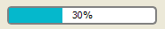
QProgressBar { border: 2px solid grey; border-radius: 5px; } QProgressBar::chunk { background-color: #05B8CC; width: 20px; }
这使得 text-align, 我们通过定位在进度条的中央的文字定义。
QProgressBar { border: 2px solid grey; border-radius: 5px; text-align: center; }
一个 margin 可以包括获得更多的可见块。
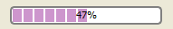
在上面的截图中，我们使用了 margin 的0.5像素。
QProgressBar::chunk { background-color: #CD96CD; width: 10px; margin: 0.5px; }
自定义 QPushButton
一个 QPushButton 的样式如下：
QPushButton { border: 2px solid #8f8f91; border-radius: 6px; background-color: qlineargradient(x1: 0, y1: 0, x2: 0, y2: 1, stop: 0 #f6f7fa, stop: 1 #dadbde); min-width: 80px; } QPushButton:pressed { background-color: qlineargradient(x1: 0, y1: 0, x2: 0, y2: 1, stop: 0 #dadbde, stop: 1 #f6f7fa); } QPushButton:flat { border: none; /* no border for a flat push button */ } QPushButton:default { border-color: navy; /* make the default button prominent */ }
对于 QPushButton 有菜单，使用 ::menu-indicator 子控件。
QPushButton:open { /* when the button has its menu open */ background-color: qlineargradient(x1: 0, y1: 0, x2: 0, y2: 1, stop: 0 #dadbde, stop: 1 #f6f7fa); } QPushButton::menu-indicator { image: url(menu_indicator.png); subcontrol-origin: padding; subcontrol-position: bottom right; } QPushButton::menu-indicator:pressed, QPushButton::menu-indicator:open { position: relative; top: 2px; left: 2px; /* shift the arrow by 2 px */ }
可勾选 QPushButton 有 :checked 伪状态集
自定义 QRadioButton
一个 QRadioButton 可以进行转换
QRadioButton::indicator { width: 13px; height: 13px; } QRadioButton::indicator::unchecked { image: url(:/images/radiobutton_unchecked.png); } QRadioButton::indicator:unchecked:hover { image: url(:/images/radiobutton_unchecked_hover.png); } QRadioButton::indicator:unchecked:pressed { image: url(:/images/radiobutton_unchecked_pressed.png); } QRadioButton::indicator::checked { image: url(:/images/radiobutton_checked.png); } QRadioButton::indicator:checked:hover { image: url(:/images/radiobutton_checked_hover.png); } QRadioButton::indicator:checked:pressed { image: url(:/images/radiobutton_checked_pressed.png); }
自定义 QScrollBar
该 QScrollBar 可以使用其子控件等来称呼 handle, add-line, sub-line, 依此类推。 请注意，如果一个属性或副控制被定制，所有其他属性或子控制也必须定做。
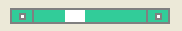
滚动条上面已经在风格蓝晶了坚实的灰色边框。
QScrollBar:horizontal { border: 2px solid grey; background: #32CC99; height: 15px; margin: 0px 20px 0 20px; } QScrollBar::handle:horizontal { background: white; min-width: 20px; } QScrollBar::add-line:horizontal { border: 2px solid grey; background: #32CC99; width: 20px; subcontrol-position: right; subcontrol-origin: margin; } QScrollBar::sub-line:horizontal { border: 2px solid grey; background: #32CC99; width: 20px; subcontrol-position: left; subcontrol-origin: margin; }
在 left-arrow and right-arrow 有一个白色的背景了坚实的灰色边框。 作为替代方案，你也可以嵌入一个箭头的形象。
QScrollBar:left-arrow:horizontal, QScrollBar::right-arrow:horizontal { border: 2px solid grey; width: 3px; height: 3px; background: white; } QScrollBar::add-page:horizontal, QScrollBar::sub-page:horizontal { background: none; }
如果你想在滚动条的滚动按钮被放置在一起（而不是边缘），如Mac OS X上，你可以使用下面的样式表：
QScrollBar:horizontal { border: 2px solid green; background: cyan; height: 15px; margin: 0px 40px 0 0px; } QScrollBar::handle:horizontal { background: gray; min-width: 20px; } QScrollBar::add-line:horizontal { background: blue; width: 16px; subcontrol-position: right; subcontrol-origin: margin; border: 2px solid black; } QScrollBar::sub-line:horizontal { background: magenta; width: 16px; subcontrol-position: top right; subcontrol-origin: margin; border: 2px solid black; position: absolute; right: 20px; } QScrollBar:left-arrow:horizontal, QScrollBar::right-arrow:horizontal { width: 3px; height: 3px; background: pink; } QScrollBar::add-page:horizontal, QScrollBar::sub-page:horizontal { background: none; }
使用上述样式表的滚动条是这样的：
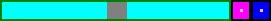
要自定义垂直滚动条使用类似如下的样式表：
QScrollBar:vertical { border: 2px solid grey; background: #32CC99; width: 15px; margin: 22px 0 22px 0; } QScrollBar::handle:vertical { background: white; min-height: 20px; } QScrollBar::add-line:vertical { border: 2px solid grey; background: #32CC99; height: 20px; subcontrol-position: bottom; subcontrol-origin: margin; } QScrollBar::sub-line:vertical { border: 2px solid grey; background: #32CC99; height: 20px; subcontrol-position: top; subcontrol-origin: margin; } QScrollBar::up-arrow:vertical, QScrollBar::down-arrow:vertical { border: 2px solid grey; width: 3px; height: 3px; background: white; } QScrollBar::add-page:vertical, QScrollBar::sub-page:vertical { background: none; }
自定义 QSizeGrip
QSizeGrip 常是由刚刚设置的图像风格。
QSizeGrip { image: url(:/images/sizegrip.png); width: 16px; height: 16px; }
自定义 QSlider
你可以样式水平滑块如下：
QSlider::groove:horizontal { border: 1px solid #999999; height: 8px; /* the groove expands to the size of the slider by default. by giving it a height, it has a fixed size */ background: qlineargradient(x1:0, y1:0, x2:0, y2:1, stop:0 #B1B1B1, stop:1 #c4c4c4); margin: 2px 0; } QSlider::handle:horizontal { background: qlineargradient(x1:0, y1:0, x2:1, y2:1, stop:0 #b4b4b4, stop:1 #8f8f8f); border: 1px solid #5c5c5c; width: 18px; margin: -2px 0; /* handle is placed by default on the contents rect of the groove. Expand outside the groove */ border-radius: 3px; }
如果你想把手前后改变滑块部分的颜色，可以使用加载页面和子页面子控件。 例如，对于一个垂直滑块：
QSlider::groove:vertical { background: red; position: absolute; /* absolutely position 4px from the left and right of the widget. setting margins on the widget should work too... */ left: 4px; right: 4px; } QSlider::handle:vertical { height: 10px; background: green; margin: 0 -4px; /* expand outside the groove */ } QSlider::add-page:vertical { background: white; } QSlider::sub-page:vertical { background: pink; }
自定义 QSpinBox
QSpinBox 可完全自定义如下（样式表有评论在线）：
QSpinBox { padding-right: 15px; /* make room for the arrows */ border-image: url(:/images/frame.png) 4; border-width: 3; } QSpinBox::up-button { subcontrol-origin: border; subcontrol-position: top right; /* position at the top right corner */ width: 16px; /* 16 + 2*1px border-width = 15px padding + 3px parent border */ border-image: url(:/images/spinup.png) 1; border-width: 1px; } QSpinBox::up-button:hover { border-image: url(:/images/spinup_hover.png) 1; } QSpinBox::up-button:pressed { border-image: url(:/images/spinup_pressed.png) 1; } QSpinBox::up-arrow { image: url(:/images/up_arrow.png); width: 7px; height: 7px; } QSpinBox::up-arrow:disabled, QSpinBox::up-arrow:off { /* off state when value is max */ image: url(:/images/up_arrow_disabled.png); } QSpinBox::down-button { subcontrol-origin: border; subcontrol-position: bottom right; /* position at bottom right corner */ width: 16px; border-image: url(:/images/spindown.png) 1; border-width: 1px; border-top-width: 0; } QSpinBox::down-button:hover { border-image: url(:/images/spindown_hover.png) 1; } QSpinBox::down-button:pressed { border-image: url(:/images/spindown_pressed.png) 1; } QSpinBox::down-arrow { image: url(:/images/down_arrow.png); width: 7px; height: 7px; } QSpinBox::down-arrow:disabled, QSpinBox::down-arrow:off { /* off state when value in min */ image: url(:/images/down_arrow_disabled.png); }
自定义 QSplitter
一个 QSplitter 从派生 QFrame 和因此可以样式像 QFrame. 把手或句柄使用定制 ::handle 子控件.
QSplitter::handle { image: url(images/splitter.png); } QSplitter::handle:horizontal { width: 2px; } QSplitter::handle:vertical { height: 2px; } QSplitter::handle:pressed { image: url(images/splitter_pressed.png); }
自定义 QStatusBar
我们可以提供状态栏的背景和状态栏里面的物品边框，如下所示：
QStatusBar { background: brown; } QStatusBar::item { border: 1px solid red; border-radius: 3px; }
需要注意的是已被添加到窗口小部件 QStatusBar 可以使用后代声明的样式（即）
QStatusBar QLabel { border: 3px solid white; }
自定义 QTabWidget and QTabBar
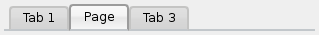
对于上面的截图中，我们需要一个样式表如下：
QTabWidget::pane { /* The tab widget frame */ border-top: 2px solid #C2C7CB; } QTabWidget::tab-bar { left: 5px; /* move to the right by 5px */ } /* Style the tab using the tab sub-control. Note that it reads QTabBar _not_ QTabWidget */ QTabBar::tab { background: qlineargradient(x1: 0, y1: 0, x2: 0, y2: 1, stop: 0 #E1E1E1, stop: 0.4 #DDDDDD, stop: 0.5 #D8D8D8, stop: 1.0 #D3D3D3); border: 2px solid #C4C4C3; border-bottom-color: #C2C7CB; /* same as the pane color */ border-top-left-radius: 4px; border-top-right-radius: 4px; min-width: 8ex; padding: 2px; } QTabBar::tab:selected, QTabBar::tab:hover { background: qlineargradient(x1: 0, y1: 0, x2: 0, y2: 1, stop: 0 #fafafa, stop: 0.4 #f4f4f4, stop: 0.5 #e7e7e7, stop: 1.0 #fafafa); } QTabBar::tab:selected { border-color: #9B9B9B; border-bottom-color: #C2C7CB; /* same as pane color */ } QTabBar::tab:!selected { margin-top: 2px; /* make non-selected tabs look smaller */ }
通常情况下，我们需要的标签重叠的样子如下：
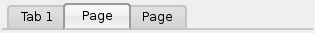
对于一个标签控件，看起来像上述情况，我们利用 negative margins. 由此产生的样式表如下：
QTabWidget::pane { /* The tab widget frame */ border-top: 2px solid #C2C7CB; } QTabWidget::tab-bar { left: 5px; /* move to the right by 5px */ } /* Style the tab using the tab sub-control. Note that it reads QTabBar _not_ QTabWidget */ QTabBar::tab { background: qlineargradient(x1: 0, y1: 0, x2: 0, y2: 1, stop: 0 #E1E1E1, stop: 0.4 #DDDDDD, stop: 0.5 #D8D8D8, stop: 1.0 #D3D3D3); border: 2px solid #C4C4C3; border-bottom-color: #C2C7CB; /* same as the pane color */ border-top-left-radius: 4px; border-top-right-radius: 4px; min-width: 8ex; padding: 2px; } QTabBar::tab:selected, QTabBar::tab:hover { background: qlineargradient(x1: 0, y1: 0, x2: 0, y2: 1, stop: 0 #fafafa, stop: 0.4 #f4f4f4, stop: 0.5 #e7e7e7, stop: 1.0 #fafafa); } QTabBar::tab:selected { border-color: #9B9B9B; border-bottom-color: #C2C7CB; /* same as pane color */ } QTabBar::tab:!selected { margin-top: 2px; /* make non-selected tabs look smaller */ } /* make use of negative margins for overlapping tabs */ QTabBar::tab:selected { /* expand/overlap to the left and right by 4px */ margin-left: -4px; margin-right: -4px; } QTabBar::tab:first:selected { margin-left: 0; /* the first selected tab has nothing to overlap with on the left */ } QTabBar::tab:last:selected { margin-right: 0; /* the last selected tab has nothing to overlap with on the right */ } QTabBar::tab:only-one { margin: 0; /* if there is only one tab, we don't want overlapping margins */ }
若要将标签栏中心（如下），我们需要以下样式表：
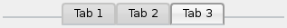
QTabWidget::pane { /* The tab widget frame */ border-top: 2px solid #C2C7CB; position: absolute; top: -0.5em; } QTabWidget::tab-bar { alignment: center; } /* Style the tab using the tab sub-control. Note that it reads QTabBar _not_ QTabWidget */ QTabBar::tab { background: qlineargradient(x1: 0, y1: 0, x2: 0, y2: 1, stop: 0 #E1E1E1, stop: 0.4 #DDDDDD, stop: 0.5 #D8D8D8, stop: 1.0 #D3D3D3); border: 2px solid #C4C4C3; border-bottom-color: #C2C7CB; /* same as the pane color */ border-top-left-radius: 4px; border-top-right-radius: 4px; min-width: 8ex; padding: 2px; } QTabBar::tab:selected, QTabBar::tab:hover { background: qlineargradient(x1: 0, y1: 0, x2: 0, y2: 1, stop: 0 #fafafa, stop: 0.4 #f4f4f4, stop: 0.5 #e7e7e7, stop: 1.0 #fafafa); } QTabBar::tab:selected { border-color: #9B9B9B; border-bottom-color: #C2C7CB; /* same as pane color */ }
撕裂指示灯和滚动按钮可以进一步自定义如下：
QTabBar::tear { image: url(tear_indicator.png); } QTabBar::scroller { /* the width of the scroll buttons */ width: 20px; } QTabBar QToolButton { /* the scroll buttons are tool buttons */ border-image: url(scrollbutton.png) 2; border-width: 2px; } QTabBar QToolButton::right-arrow { /* the arrow mark in the tool buttons */ image: url(rightarrow.png); } QTabBar QToolButton::left-arrow { image: url(leftarrow.png); }
Qt的4.6的关闭按钮可以自定义如下：
QTabBar::close-button { image: url(close.png) subcontrol-position: left; } QTabBar::close-button:hover { image: url(close-hover.png) }
自定义 QTableView
假设我们想在我们选择的项目 QTableView 中有泡泡糖粉红色褪色成白色为背景
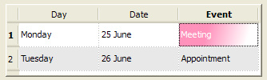
这是可能的 selection-background-color 属性和所需的语法是：
QTableView { selection-background-color: qlineargradient(x1: 0, y1: 0, x2: 0.5, y2: 0.5, stop: 0 #FF92BB, stop: 1 white); }
转角小部件可以使用下面的样式表来定制
QTableView QTableCornerButton::section { background: red; border: 2px outset red; }
自定义 QToolBar
背景和一个句柄 QToolBar 定制如下:
QToolBar { background: red; spacing: 3px; /* spacing between items in the tool bar */ } QToolBar::handle { image: url(handle.png); }
自定义 QToolBox
标签 QToolBox 正在使用的'标签'子控件定制
QToolBox::tab { background: qlineargradient(x1: 0, y1: 0, x2: 0, y2: 1, stop: 0 #E1E1E1, stop: 0.4 #DDDDDD, stop: 0.5 #D8D8D8, stop: 1.0 #D3D3D3); border-radius: 5px; color: darkgray; } QToolBox::tab:selected { /* italicize selected tabs */ font: italic; color: white; }
自定义 QToolButton
有三种类型的QToolButtons
- 该 QToolButton 没有菜单。在这种情况下 QToolButton 是风格酷似 QPushButton. 见自定义 QPushButton 的一个例子。
- 该 QToolButton 拥有一个菜单，并具有 QToolButton::popupMode 设置为 QToolButton::DelayedPopup 或者 QToolButton::InstantPopup. 在这种情况下 该 QToolButton 是风格酷似 QPushButton 用的菜单。见 自定义 QPushButton 为菜单指示器伪状态的使用的一个例子。
- 该 QToolButton 拥有 QToolButton::popupMode 设置 QToolButton::MenuButtonPopup.在这种情况下，我们的样式，如下所示：
QToolButton { /* all types of tool button */ border: 2px solid #8f8f91; border-radius: 6px; background-color: qlineargradient(x1: 0, y1: 0, x2: 0, y2: 1, stop: 0 #f6f7fa, stop: 1 #dadbde); } QToolButton[popupMode="1"] { /* only for MenuButtonPopup */ padding-right: 20px; /* make way for the popup button */ } QToolButton:pressed { background-color: qlineargradient(x1: 0, y1: 0, x2: 0, y2: 1, stop: 0 #dadbde, stop: 1 #f6f7fa); } /* the subcontrols below are used only in the MenuButtonPopup mode */ QToolButton::menu-button { border: 2px solid gray; border-top-right-radius: 6px; border-bottom-right-radius: 6px; /* 16px width + 4px for border = 20px allocated above */ width: 16px; } QToolButton::menu-arrow { image: url(downarrow.png); } QToolButton::menu-arrow:open { top: 1px; left: 1px; /* shift it a bit */ }
自定义 QToolTip
QToolTip 定制酷似的 QLabel. 此外，用于支持它的平台上，不透明度属性可以被设置为调整不透明度
例如，
QToolTip { border: 2px solid darkkhaki; padding: 5px; border-radius: 3px; opacity: 200; }
自定义 QTreeView
交替行的背景颜色可以用下面的样式表进行定制：
QTreeView { alternate-background-color: yellow; }
为了提供当你将鼠标悬停在项的特殊背景下，我们可以使用 ::item 子控件。例如，
QTreeView { show-decoration-selected: 1; } QTreeView::item { border: 1px solid #d9d9d9; border-top-color: transparent; border-bottom-color: transparent; } QTreeView::item:hover { background: qlineargradient(x1: 0, y1: 0, x2: 0, y2: 1, stop: 0 #e7effd, stop: 1 #cbdaf1); border: 1px solid #bfcde4; } QTreeView::item:selected { border: 1px solid #567dbc; } QTreeView::item:selected:active{ background: qlineargradient(x1: 0, y1: 0, x2: 0, y2: 1, stop: 0 #6ea1f1, stop: 1 #567dbc); } QTreeView::item:selected:!active { background: qlineargradient(x1: 0, y1: 0, x2: 0, y2: 1, stop: 0 #6b9be8, stop: 1 #577fbf); }
一的分支 QTreeView 则使用风格 ::branch 子控件。绘图分支时，以下样式表颜色代码的各种状态。
QTreeView::branch { background: palette(base); } QTreeView::branch:has-siblings:!adjoins-item { background: cyan; } QTreeView::branch:has-siblings:adjoins-item { background: red; } QTreeView::branch:!has-children:!has-siblings:adjoins-item { background: blue; } QTreeView::branch:closed:has-children:has-siblings { background: pink; } QTreeView::branch:has-children:!has-siblings:closed { background: gray; } QTreeView::branch:open:has-children:has-siblings { background: magenta; } QTreeView::branch:open:has-children:!has-siblings { background: green; }
丰富多彩的，虽然它是一个更有用的例子，可以用下面的图像进行：
| 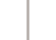 | 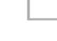 | 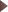 | 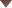 | |
| vline.png | branch-more.png | branch-end.png | branch-closed.png | branch-open.png |
QTreeView::branch:has-siblings:!adjoins-item { border-image: url(vline.png) 0; } QTreeView::branch:has-siblings:adjoins-item { border-image: url(branch-more.png) 0; } QTreeView::branch:!has-children:!has-siblings:adjoins-item { border-image: url(branch-end.png) 0; } QTreeView::branch:has-children:!has-siblings:closed, QTreeView::branch:closed:has-children:has-siblings { border-image: none; image: url(branch-closed.png); } QTreeView::branch:open:has-children:!has-siblings, QTreeView::branch:open:has-children:has-siblings { border-image: none; image: url(branch-open.png); }
结果树视图看起来是这样的：
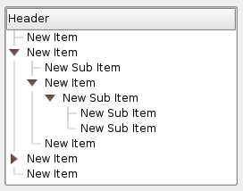
常见错误 使用样式表时，本节列出一些常见的错误
QPushButton and images
当造型一个 QPushButton, 通常希望使用图像作为按钮图形。这是常见的尝试 background-image 属性，但这有许多缺点：例如，背景会经常出现隐藏按钮装饰后面，因为它不被认为是背景。此外，如果按钮的大小时，整个背景会被拉伸或平铺，这并不总是不好看。
这是更好地利用 border-image 财产，因为它总是会显示图像，无论背景（你可以，如果它有它的alpha值与背景结合起来），它具有特殊的设置来处理按钮大小调整。
考虑下面的代码片段:
QPushButton { color: grey; border-image: url(/home/kamlie/code/button.png) 3 10 3 10; border-top: 3px transparent; border-bottom: 3px transparent; border-right: 10px transparent; border-left: 10px transparent; }
这将产生一个按钮，看起来像这样：
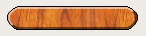
在URL后的数字分别赋予像素的上，右，下和左数。这些数字对应的边界，不应该当伸展大小的变化。无论何时调整按钮，图像的中间部分将在两个方向上拉伸，而在样式表中不会指定的像素。这使得该按钮的边框看起来更自然，就像这样：
| 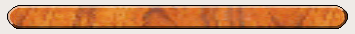 |
| 圆形边界 |
| 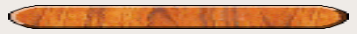 |
| 无边界 |
另请参见 Style Sheet Example, Supported HTML Subset, and QStyle.